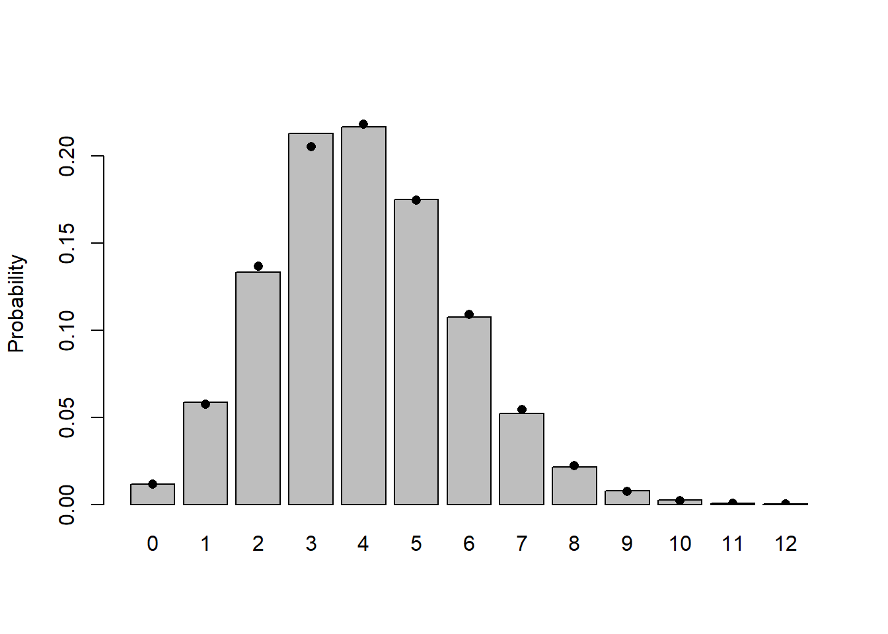
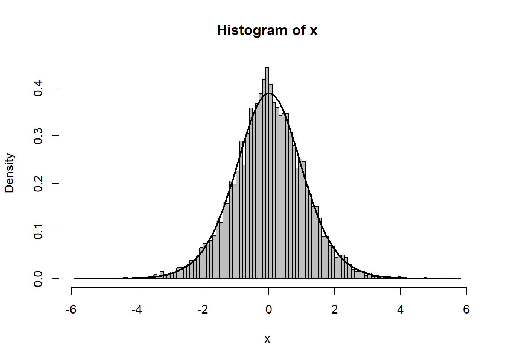

Lab 4: Probability distributions
1 Learning goals
This lab has two goals:
Practice with probability distributions on different types of data.
Make you familiar with the technicalities of stochastic distributions in
R.
In particular, how to generate values from probability distributions and how to make your own probability distribution. Under time constraints, make sure that you make at least the exercises in the first three sections.
2 Choosing probability distributions
In this exercise we revisit the shapes dataset from the previous lab. Remember that we had six different datasets each describing different ecological phenomenon. The first step to model your data was to choose a deterministic function that describes the mean effect of the predictor variable (x) on the response variable (y). The second step involves the choice of the stochastic distribution which describes how the data varies around the mean and that is what we will focus on today.
Exercise
Reload the six datasets and choose for each dataset one or two candidate probability distributions. To guide you in making the choice consider whether you have counts (integer) or continuous (real) values. Also, if you have continuous values, are they constraint? (e.g., only positive, or only between zero and one).
For simplicity, you may work with the distributions in table 4.1 in the book. But if you are curious, you can check this Wikipedia page that lists a large number of distributions: https://en.wikipedia.org/wiki/List_of_probability_distributions
3 Random distributions in R
R knows about lots of probability distributions (and there are packages that define additional distributions). For each distribution, it defines four functions that can do different things related to the distribution. Taken the Binomial distribution for random variable x as example it can:
Generate random numbers drawn from the distribution. For example
rbinom(n,size,prob)givesnvalues ofxwith parameterssize(total number of draws) andp(probability of success on each draw). Every distribution will have an equivalent function (rnormfor the Normal,rpoisfor the Poisson, etc.).Compute the probability (density or mass) function. For example
dbinom(n, size prob)will give the probability mass that \(x = n\).Compute the cumulative probability function. For example
pbinom(q, size prob)will give the cumulative probability that \(x \leq q\), that is \(\int_0^q P(x)dx\).Compute the quantile function. For example,
qbinom(p, size, prob)gives the \(x\) value such as that \(\int_0^q P(x)dx = p\).
Notice that the quantile and cumulative functions are related. In one case, I fix a cumulative probability value and I calculate a value of \(x\) (quantile) and in the other case I fix the value of \(x\) and I calculate the cumulative probability.
We can generate random draws with the same or different parameter values. For example:
rbinom(10,size=8,prob=0.5)
rbinom(3,size=8,prob=c(0.2,0.4,0.6))In the first case I generate 10 random values from the same distribution. In the second case I generate three random values from three different distributions (they different in the argument prob).
The code below shows the result of drawing a large number of values from a binomial distribution with \(N=12\) (i.e., size = 12) and \(p=0.5\) (i.e., prob = 0.5) and plotting the results as a factor in order to create bars (never use histograms on discrete variables):
set.seed(1)
plot(factor(rbinom(5000,size=12,prob=0.5)), xlab="# of successes",
ylab="# of trials out of 5000")The four functions described above exist for each of the distributions R has built-in: e.g. for the normal distribution they’re rnorm(), pnorm(), dnorm(), qnorm(). Each distribution has its own set of parameters (so e.g. pnorm() is pnorm(x,mean=0,sd=1)). To see which distributions are available in the base package; check ?distributions. For additional distributions check the packages listed in https://cran.r-project.org/web/views/Distributions.html
The code below plots the four functions for the Normal distribution. We generate some arrows to indicate what is an input to the function and what is an output.
par(mfrow = c(2,2), mar = c(2.5,4,2.5,1), mgp = c(3,1,0), las = 1, xaxs = "i", yaxs = "i")
# Parameters and variables
mu = 10
sd = 3
x = 7.5
P = 0.4
# dnorm
curve(dnorm(x,mu,sd),0,20, ylab = "p(x)", main = "dnorm", ylim = c(0,0.15))
arrows(x,0,x,dnorm(x,mu,sd), length = 0.1, col = 2)
arrows(x,dnorm(x,mu,sd), 0, dnorm(x,mu,sd), length = 0.1, col = 2)
# rnorm
curve(dnorm(x,mu,sd),0,20, ylab = "p(x)", main = "rnorm", ylim = c(0,0.15))
set.seed(0)
sample = rnorm(20, mu, sd)
points(sample, rep(0.005, 20), cex = 1.5)
# pnorm
curve(pnorm(x,mu,sd),0,20, ylab = "P(x)", main = "pnorm", ylim = c(0,1))
arrows(x,0,x,pnorm(x,mu,sd), length = 0.1, col = 2)
arrows(x,pnorm(x,mu,sd), 0, pnorm(x,mu,sd), length = 0.1, col = 2)
# qnorm
curve(pnorm(x,mu,sd),0,20, ylab = "P(x)", main = "qnorm", ylim = c(0,1))
arrows(0,P, qnorm(P,mu,sd),P, length = 0.1, col = 2)
arrows(qnorm(P,mu,sd),P, qnorm(P,mu,sd), 0, length = 0.1, col = 2)
par(mfrow = c(1,1))
Exercise
For the binomial distribution with 10 trials and a success probability of 0.2:
Pick 8 random values and sort them into increasing order (if you
set.seed(1001)beforehand, you should get \(X=0\) (twice), \(X=2\) (4 times), and \(X=4\) and \(X=5\) (once each)).Calculate the probabilities of getting 3, 4, or 5 successes first by hand (See Chapter4) and check it with the computer.
Calculate the probability of getting 5 or more successes.
You can use the R functions to test your understanding of a distribution and make sure that random draws match up with the theoretical distributions as they should. This procedure is particularly valuable when you’re developing new probability distributions by combining simpler ones, e.g. by zero-inflating or compounding distributions.
The results of a large number of random draws should have the correct moments (mean and variance), and a histogram of those random draws (with freq=FALSE or prob=TRUE) should match up with the theoretical distribution. For example, draws from a binomial distribution with \(p=0.2\) and \(N=20\) should have a mean of approximately \(Np=4\) and a variance of \(Np(1-p)=3.2\):
set.seed(1001)
N=20; p=0.2
x = rbinom(10000,prob=p,size=N)
c(mean(x),var(x))The mean is very close, the variance is a little bit farther off. Just for the heck of it, we can use the replicate() function to re-do this command many times and see how close we get:
var_dist = replicate(1000,var(rbinom(10000,prob=p,size=N)))Looking at the summary statistics and at the 2.5% and 97.5% quantiles of the distribution of variances:
summary(var_dist)
quantile(var_dist,c(0.025,0.975))
hist(var_dist)Even though there’s some variation (of the variance) around the theoretical value, we seem to be doing the right thing since the 95% confidence limits include the theoretical value (and the average of this sampling distribution is very close to the true value). Chapter 5 and the last exercise in Lab 6 go deeper into how we can use simulations to check estimates.
I the figure below I show the barplot of 10000 draws along with the theoretical values.
The steps in R to produce this figure are:
1. Generate 10,000 random deviates:
x = rbinom(10000,prob=p,size=N)2. Tabulate the values, and divide by the number of samples to get their frequencies:
tx = table(factor(x,levels=0:12))/10000Note that the levels command is necessary in this case because the probability of \(x=12\) with \(p=0.2\) and \(N=12\) is actually so low (\(\approx 4\times 10^{-9}\)) that it’s very unlikely that a sample of 10,000 won’t include any samples with 12 successes.
3. Draw a barplot of the values, extending the \(y\)-limits a bit to make room for the theoretical values and saving the \(x\) locations at which the bars are drawn:
b1 = barplot(tx,ylim=c(0,0.23),ylab="Probability")4. Add the theoretical values, plotting them at the same \(x\)-locations as the centers of the bars (these were stored inside b1):
points(b1,dbinom(0:12,prob=p,size=N),pch=16)Note that barplot() doesn’t put the bars at \(x\) locations (because the x axis is assume discrete, there is no concept of coordinates, imagine if these data were countries or species). For that reason, we need to store the actual coordinates where each bar was drawn by storing these in the variable b1 to make sure that the theoretical values end up in the right place.
Exercise
Pick 10,000 negative binomial deviates with \(\mu=2\), \(k=0.5\) (using rnbinom()). In rbnbinom() \(\mu\) = mu and \(k\) = size. Pick one of the ways above to draw the distribution. Check that the mean and variance agree reasonably well with the theoretical values. Add points representing the theoretical distribution to the plot.
Doing the equivalent plot for continuous distributions is actually somewhat easier, since you don’t have to deal with the complications of a discrete distribution: the histogram method will automatically create bins for the data and tabulate the frequency and derive estimates of probability from that (hist(...,prob=TRUE)). You could then add the theoretical density function on top (e.g.: curve(dgamma(x, shape = 2, scale = 1), add = TRUE)).
4 Averaging distributions
Suppose we have a (tiny) data set; we can organize it in two different ways, in standard long format or in tabular form:
dat = c(5,6,5,7,5,8); dat
tabdat = table(dat); tabdatTo get some basic estimates of the probabilities from the data, we can just scale the calculated frequency by the total sample size:
prob=tabdat/sum(tabdat); probIn the long format, we can take the mean with mean(dat) or, replicating the formula \(\sum x_i/N\) exactly, sum(dat)/length(dat).
In the tabular format, we can calculate the mean with the formula \(\sum P(x) x\), which in R would be sum(prob*5:8) or more generally
vals = as.numeric(names(prob))
sum(prob*vals)names extracts the names of the vector and as.numeric transform characters to numbers. You could also get the values by as.numeric(levels(prob)), or by sort(unique(dat)).
Going back the other way, from a table to raw values, we can use the rep() function to repeat values an appropriate number of times. In its simplest form, rep(x,n) just creates a vector repeats x (which may be either a single value or a vector) n times, but if n is a vector as well then each element of x is repeated the corresponding number of times: for example,
rep(c(1,2,3),c(2,1,5))gives two copies of 1, one copy of 2, and five copies of 3.
Therefore,
rep(vals,tabdat)will recover our original data (although not in the original order) by repeating each element of vals the correct number of times.
4.1 Jensen’s inequality
Jensen’s inequality states the following: Suppose you have a number of values, \(x\), with a mean \(\bar{x}\), and a non-linear function \(f(x)\). Then the mean of \(f(x)\) is not equal to \(f(\bar{x})\).
Jensen’s inequality can be important in a number of cases. The first one is mentioned in Chapter 4 (page 104) on how variability can change the mean behaviour of a system (damselfish).
Another example where Jensen’s inequality kicks in is when transforming your data. Data transformations are commonly applied to get normally distributed errors. Because in statistical models you are often interested in the mean effect of a given treatment.
Note that quantiles are not afffected by Jensen’s inequality as long as the transformation is monotonic. Thus, if you were to model the median effect of a given treatment you could back transform that.
Exercise
Find out what the effect of Jensen’s inequality is on a series of log-tranformed datapoints with respect to the estimated mean.
Use the following pseudo-code:
Generate 10 random deviates from a uniform distribution (choose the range of 0 to 10).
Calculate the mean of those 10 deviates.
Plot the function \(\log(x)\) with
curve()on the range from 0-10, and plot random sample onto it.Calculate the mean of the log-transformed values and transform this mean back the normal scale, and compare to the mean calculated at 1.
Plot the means with
abline(h=...)if you want to draw a horizontal line orabline(v=...)to draw a vertical line.Explain differences between the two means.
This exercise shows that it is usually a good idea to leave variables untransformed when estimating the properties from this data.
5 The method of moments: reparameterizing distributions
In the chapter, I showed how to use the method of moments to estimate the parameters of a distribution by setting the sample mean and variance (\(\bar x\), \(s^2\)) equal to the theoretical mean and variance of a distribution and solving for the parameters. For the negative binomial, in particular, I found \(\mu=\bar x\) and \(k=(\bar x)/(s^2/\bar x -1)\).
You can also define your own functions that use your own parameterizations: call them my_function rather than just replacing the standard R functions.
For example, defining
my_dnbinom = function(x,mean,var,...) {
mu = mean
k = mean/(var/mean-1)
dnbinom(x,mu=mu,size=k,...)
}
my_rnbinom = function(n,mean,var,...) {
mu = mean
k = mean/(var/mean-1)
rnbinom(n,mu=mu,size=k,...)
}(the ... in the function takes any other arguments you give to my_dnbinom and just passes them through, unchanged, to dnbinom).
Defining your own functions can be handy if you need to work on a regular basis with a distribution that uses a different parameterization than the one built into the standard R function.
You can use the kinds of histograms shown above to test your results (remembering that the method of moments estimates may be slightly biased especially for small samples — but they shouldn’t cause errors as large as those caused by typos in code or mistakes in the formulae).
x = my_rnbinom(100000,mean=1,var=4)
mean(x)
var(x)tx = table(factor(x,levels=0:max(x)))/100000
b1 = barplot(tx,ylab="Probability")
points(b1,my_dnbinom(0:max(x),mean=1,var=4),pch=16)
abline(v=1)
Exercise
Morris (1997) gives a definition of the beta function that is different from the standard statistical parameterization. The standard parameterization is
\[ \mbox{Beta}(x|a,b) = \frac{\Gamma(a+b)}{\Gamma(a)\Gamma(b)} x^{a-1}(1-x)^{b-1} \]
whereas Morris uses
\[ \mbox{Beta}(x|P,\theta) = \frac{\Gamma(\theta)}{\Gamma(\theta P)\Gamma(\theta (1-P))} x^{\theta P-1} (1-x)^{\theta(1-P)-1}. \]
Find expressions for \(P\) and \(\theta\) in terms of \(a\) and \(b\) and viceversa (use pen and paper).
Explain why you might prefer Morris’s parameterization.
Define a new set of functions that generate random numbers from the beta distribution (
my_rbeta) and calculate the density function (my_dbeta) in terms of \(P\) and \(\theta\).Generate a histogram from this distribution and draw a vertical line showing the mean of the distribution. Vertical lines can be drawn by using
abline(v=...)
6 Creating new distributions
6.1 Zero-inflated distributions
The general formula for the probability distribution of a zero-inflated distribution, with an underlying distribution \(P(x)\) and a zero-inflation probability of \(p_z\), is:
\[ \begin{eqnarray*} \mbox{Prob}(0) & = & p_z + (1-p_z) P(0) \\ \mbox{Prob}(x>0) & = & (1-p_z) P(x) \end{eqnarray*} \]
So, for example, we could define a probability distribution for a zero-inflated negative binomial as follows:
dzinbinom = function(x,mu,size,zprob) {
ifelse(x==0,
zprob+(1-zprob)*dnbinom(0,mu=mu,size=size),
(1-zprob)*dnbinom(x,mu=mu,size=size))
}The name, dzinbinom, follows the R convention for a probability distribution function: a d followed by the abbreviated name of the distribution, in this case zinbinom for “zero-inflated negative binomial”).
The ifelse() command checks every element of x to see whether it is zero or not and fills in the appropriate value depending on the answer.
The sampling function for our zero-inflated distribution would look like this:
rzinbinom = function(n,mu,size,zprob) {
ifelse(runif(n)<zprob,
0,
rnbinom(n,mu=mu,size=size))
}The command runif(n) picks n random values between 0 and 1; the ifelse command compares them with the value of zprob. If an individual value is less than zprob (which happens with probability zprob=\(p_z\)), then the corresponding random number is zero; otherwise it is a value picked out of the appropriate negative binomial distribution.
Exercise
Check graphically that these functions actually work. For instance, you could compare the results with a negative binomial function with the same mean and variance as the data.
7 Compounding distributions
The key to compounding distributions in R is that the functions that generate random deviates can all take a vector of different parameters rather than a single parameter. For example, if you were simulating the number of hatchlings surviving (with individual probability 0.8) from a series of 8 clutches, all of size 10, you would say
rbinom(8,size=10,prob=0.8)but if you had a series of clutches of different sizes, you could still pick all the random values at the same time:
clutch_size = c(10,9,9,12,10,10,8,11)
rbinom(8,size=clutch_size,prob=0.8)Taking this a step farther, the clutch size itself could be a random variable:
clutch_size = rpois(8,lambda=10)
rbinom(8,size=clutch_size,prob=0.8)We’ve just generated a Poisson-binomial random deviate…
As a second example, I’ll follow Clark et al. in constructing a distribution that is a compounding of normal distributions, with 1/variance of each sample drawn from a amma distribution.
First pick the variances as the reciprocals of 10,000 values from a gamma distribution with shape 5 (setting the scale equal to 1/5 so the mean will be 1):
var_vals=1/rgamma(10000,shape=5,scale=1/5)Take the square root, since dnorm uses the standard deviation and not the variance as a parameter:
sd_vals = sqrt(var_vals)Generate 10,000 normal deviates using this range of standard deviations:
x = rnorm(10000,mean=0,sd=sd_vals)Figure 4 shows a histogram of the following commands:
hist(x,prob=TRUE,breaks=100,col="gray")
curve(dt(x,df=11),add=TRUE,lwd=2)
The superimposed curve is a \(t\) distribution with 11 degrees of freedom; it turns out that if the underlying gamma distribution has shape parameter \(p\), the resulting \(t\) distribution has \(df=2p+1\). Figuring out the analytical form of the compounded probability distribution or density function, or its equivalence to some existing distribution, is the hard part; for the most part, though, you can find these answers in the ecological and statistical literature if you search hard enough.
Exercise
Generate 10,000 values from a gamma-Poisson compounded distribution with parameters shape = 0.5, scale = 4/0.5 = 8 and demonstrate that it’s equivalent to a negative binomial with the appropriate mean and shape parameters.